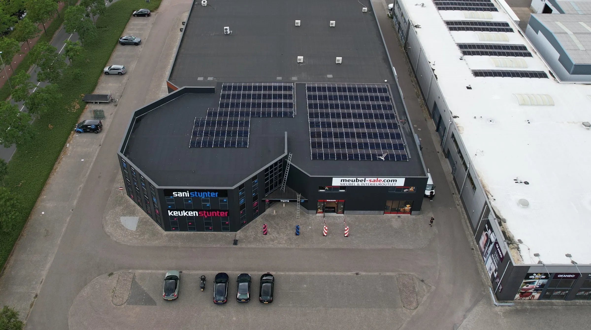
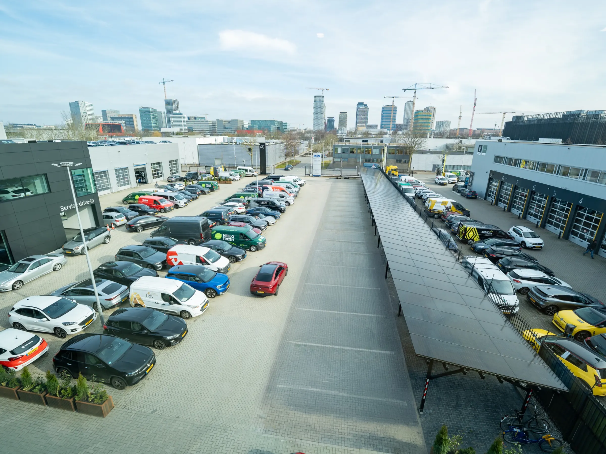
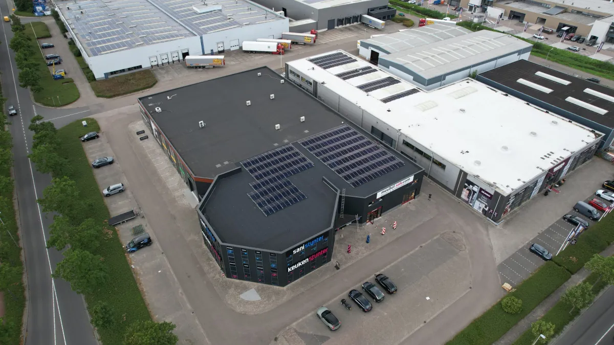
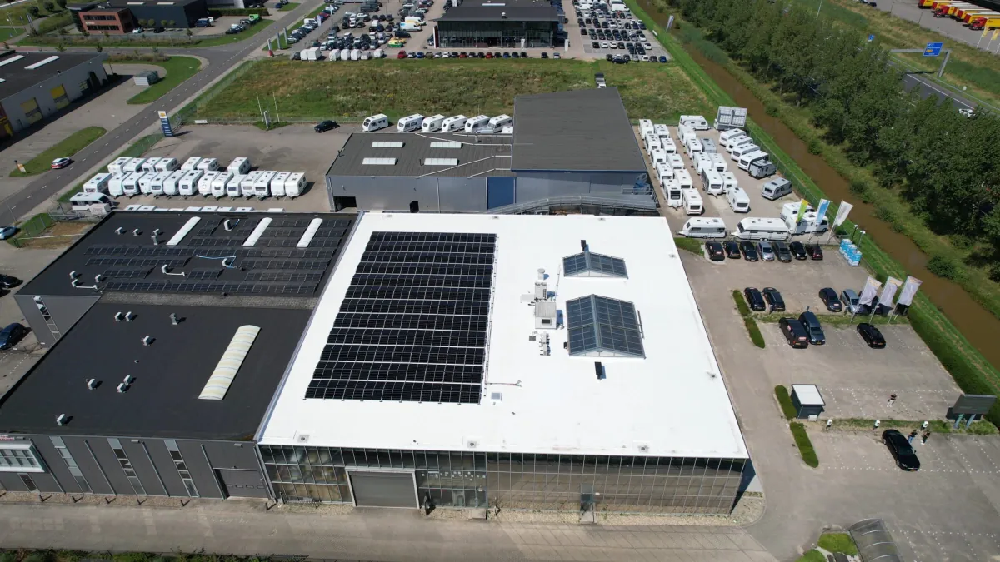

Energie is geen kostenpost. Het hoort bij de exploitatie.
Het dak, de aansluiting en het parkeerterrein zijn al van u. Vibe maakt er een stuurbaar onderdeel van het pand van: opwek, opslag, laden en sturing in samenhang, zodat energie meebeweegt met het gebouw in plaats van alleen in de servicekosten terecht te komen.
Wat er tegelijk op hetzelfde pand drukt.
Regelgeving, huurders, techniek en rendement komen samen in hetzelfde gebouw. Afzonderlijk is er met elk iets te regelen; bij elkaar bepalen ze of het pand verhuurbaar blijft.
Label C is de wettelijke ondergrens
Kantoren in Nederland moeten minimaal energielabel C hebben; die verplichting geldt sinds 2023. Het is regelgeving, geen ambitie — en ze gaat over het pand, niet over de plannen die u ermee heeft.
Huurders vragen erom
Huurders vragen in toenemende mate om laadpunten bij het pand en om een gebouw met een goed energielabel. Wat eerder een wens was, komt nu ter sprake voordat er getekend wordt.
De aansluiting bepaalt wat erbij kan
Laadpunten, warmtepompen en elektrische installaties vragen vermogen op dezelfde kabel. Extra transportvermogen is lang niet overal vanzelfsprekend, en verzwaren is geen route die zich op een verhuurtermijn laat plannen.
Het dak doet nog niets terug
Een plat dak en een parkeerterrein zijn ruimte die u al bezit. Zolang daar geen opwek, opslag en sturing op staan, leveren ze niets aan de exploitatie en blijft energie uitsluitend een post aan de kostenkant.
Opwek, opslag, laden en sturing als één pakket.
Losse ingrepen lossen elk hun eigen probleem op en lopen daarna op elkaar vast: panelen die terugleveren op het verkeerde moment, laadpunten die het vermogen opeten dat de installaties nodig hebben. Als ze onder dezelfde regeling komen, versterken ze elkaar.
Opwek op het dak
Het platte dak draagt de panelen. Wat het pand overdag zelf gebruikt, hoeft niet ingekocht te worden.
Opslag achter de meter
Een batterij bewaart de opwek tot het gebouw of een laadsessie erom vraagt, en vangt de piek op die anders de aansluiting raakt.
Laden op het terrein
Laadpunten voor huurders en bezoekers krijgen het vermogen dat op dat moment vrij is, zonder dat de installaties in het gebouw eronder lijden.
Sturing over het geheel
VIBE.CONTROL bepaalt per moment waar het vermogen vandaan komt en waar het heen gaat, binnen de grens die de aansluiting stelt.

Energie verschuift van de kostenkant naar de exploitatie.
Zolang het dak leeg ligt en de aansluiting alleen afneemt, is energie een post die elk jaar terugkomt. Met opwek, opslag en gestuurd laden erop wordt het een onderdeel van het pand dat u zelf stuurt — en dat meeweegt bij verhuur, bij het label en bij wat er nog bij kan.

Een deel van het dak ligt vol, een deel nog niet. Wat er bij kan, volgt niet uit de vierkante meters alleen, maar uit wat de aansluiting en de regeling toelaten.
Edisonweg 16, Purmerend. Zonne-energie binnen een beperkte teruglevercapaciteit, geregeld met dynamische vermogensregeling.
Bekijk het projectHet pand als systeem, niet als losse installaties.
De aansluiting blijft wat hij is. Wat erbinnen gebeurt, is wél te verdelen — en dat verdelen is precies waar de ruimte zit.
Aansluiting
De contractwaarde blijft de bovengrens; het systeem bewaakt hem in plaats van hem te overschrijden.
Opwek, buffer & regeling
Dak, batterij en regelaar werken als één geheel en bepalen per moment de inzet.
Gebouw, huurders & laadpunten
Klimaat en verlichting houden voorrang; laden beweegt mee met wat er beschikbaar is.
Het parkeerterrein telt mee.
Het parkeerterrein doet mee: opwek boven de vakken, laadpunten eronder, en een verdeling die binnen het vermogen blijft dat de aansluiting beschikbaar heeft.

Panden waar dit al staat.
Geen rekenvoorbeelden, maar gebouwen met een naam en een plaats, waar dak, opslag en laden binnen de bestaande situatie zijn ingepast.

Edisonweg 16
216 zonnepanelen, samen 97,7 kW, met een dynamische vermogensregeling binnen een beperkte teruglevercapaciteit. Het energielabel ging 3 stappen omhoog.
Bekijk het project →
Dormio Medemblik
219 zonnepanelen en 215 kWh opslag op hetzelfde gebouw. Een besparing van 73% en een energielabel dat 4 stappen omhoog ging.
Bekijk het project →
Ratio 16
240 zonnepanelen, 157 kW opslag en een laadplein van 132 kW met 12 plekken — binnen een ongewijzigd transportvermogen van 51 kW.
Bekijk het project →Goed om te weten.
Helpt dit om aan de labelverplichting te voldoen?
Eigen opwek en sturing verlagen wat het pand van buiten nodig heeft, en dat weegt mee in het energielabel. Hoeveel het oplevert, hangt af van het gebouw zelf: schil, installaties en gebruik tellen allemaal mee. Ter illustratie: bij Edisonweg 16 in Purmerend ging het label 3 stappen omhoog, bij Dormio Medemblik 4. Voor uw pand rekenen we het door voordat u iets vastlegt.
Moeten wij zelf investeren?
Niet per se. Naast een reguliere koop is exploitatie mogelijk: Vibe investeert, bouwt en beheert de installatie, en u betaalt voor het gebruik ervan. Of dat in uw situatie uitkomt, beoordelen we per situatie — het hangt af van uw profiel, uw plannen met het pand en de looptijd die u wilt.
Wat als het pand verhuurd is?
Dan zijn de afspraken met de huurder onderdeel van het traject: wie gebruikt wat, wat loopt via de servicekosten en hoe het laden wordt afgerekend. Dat leggen we vooraf vast, samen met de looptijd, zodat er achteraf geen discussie over ontstaat.
Geldt dit ook voor een portefeuille?
Ja. De analyse kan over meerdere panden tegelijk: welk pand levert de grootste stap op, welk pand kan wachten en waar is de aansluiting de beperkende factor. Omdat dak, aansluiting en huurdersmix per pand verschillen, is de volgorde voor elke portefeuille anders.
Wat levert het op?
Dat verschilt per pand en volgt uit het verbruik, het dak, de aansluiting en wat de huurders vragen. Wij maken de businesscase inzichtelijk voordat u iets vastlegt — en als het voor een pand niet uitkomt, zeggen we dat.
Wat doet uw pand op dit moment met energie?
Stuur ons het verbruik, het energielabel en de aansluitgegevens van het pand of de portefeuille. Wij laten zien wat er op het dak, achter de meter en op het parkeerterrein mogelijk is — en wat dat betekent voor de exploitatie.
Vrijblijvend, en per pand beoordeeld.